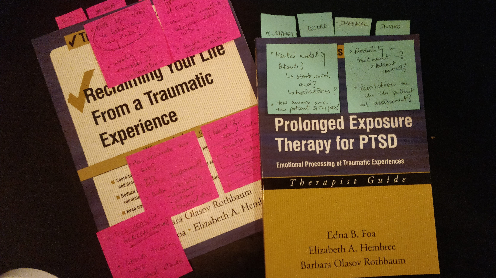

Prolonged Exposure Collective Sensing System (PECSS)
A platform to administer and visualize
patient's progress during PTSD therapy
Outcome
Ongoing Project (praise from clinicians and veterans so far)
Ongoing Project (praise from clinicians and veterans so far)
Role
Interviewing clinicians and veterans to create the PECSS platform
Developing the platform using Android Studio (Java)
Interviewing clinicians and veterans to create the PECSS platform
Developing the platform using Android Studio (Java)
Team
Dr. Rosa Arriaga, Catherine Deeter, Hayley Evans, Varnit Jain, Adam Hayward, Dr. Thomas Ploetz, Peter Presti, Marcus Wilder
Dr. Rosa Arriaga, Catherine Deeter, Hayley Evans, Varnit Jain, Adam Hayward, Dr. Thomas Ploetz, Peter Presti, Marcus Wilder
Tools
Qualtrics, Sketch, Android Studio, Java, JavaScript
Qualtrics, Sketch, Android Studio, Java, JavaScript
Timeline (Aug '19 - Present)
Research
6 months
Performing formative research with clinicians and veterans to design the platform
6 months
Performing formative research with clinicians and veterans to design the platform
Design
2 month
Analysing user researchd data
2 month
Analysing user researchd data
Android Development
10 months
Completed the development of the first version of the HIPAA-compliant PECSS application
10 months
Completed the development of the first version of the HIPAA-compliant PECSS application
Context
Post Traumatic Stress Disorder (PTSD) is a chronic condition marked by considerable distress and dysfunction.
Fortunately, evidence-based treatments exist for PTSD.
Among the many pharmacological and psychotherapy approaches that have been
used to treat PTSD, Prolonged Exposure (PE) therapy has the best evidence for
therapeutic efficacy.
"However, the delivery of PE Therapy has
been constrained by data collected from patient self-report and
clinician intuition. This data is subjective and narrow, functioning
as an ever-present obstacle in the practice, training, and
psychotherapy delivery."
Clinicians who treat mental illness are in urgent need of
methods, tools, and data to efficiently track, assess, and respond
to mental health needs throughout the treatment process.
Patients need tools that provide feedback to optimize their therapeutic exercises.
"We propose to transform mental health assessment and care through
enhancing these clinical practices with data-driven approaches."
I joined this project in August 2019, when I joined the Ubicomp Lab
as a Graduate Research Assistant with Dr. Rosa Arriaga.
My work focuses on designing and developing the
patient-facing application. We are collaborating with Emory University
for PE Therapy expertise and Rochester University for Natural
Language Processing. This project is funded by the National
Science Foundation (NSF).
Research
1. Understanding the Prolonged Exposure (PE) Therapy
The first step in understanding the PE Therapy was to read through
the PE manuals used by therapists. The treatment and manuals are designed
for use by a therapist familiar with cognitive behavior therapy and (CBT)
or who underwent intensive workshops for prolonged exposure by experts in
this therapy. The manual guides therapists and counselors to implement this
brief CBT program that targets PTSD following various types of trauma.

Even though the therapy followed by each patient undergoing PE therapy is
unique in some way, there is a lot of structure that has to be followed by
the clinicians. After reading the manual, guide, and
workbooks, I was able to formulate a typical PE workflow.
Patient Health Questionnaire
The Patient Health Questionnaire (PHQ)
is a self-administered tool for assessing depression.
Individual Therapy Session
A one-on-one therapy session where the patient records their
traumatic experience in their own words towards the end.
Group Therapy Session
A group therapy session where the patients discuss and formulate a
list of tasks in increasing order stress specific to their experience.
Homework Type 1: Imaginal
A homework session where the patient has to listen to the audio
recorded in the individual therapy session without any distractions.
Homework Type 2: In-Vivo
One or more homework activities that the patient has to perform as
per their discussion in the group therapy session.
After understanding the PE workflow, I asked our primary contact at Emory
University, a clinical psychologist who works with PTSD patients,
if they used any existing technology for Prolonged Exposure Therapy -
PE Coach. They told me that PE Coach (mobile
phone application) had helpful features but was not usable at all.
So, I decided to investigate it myself.